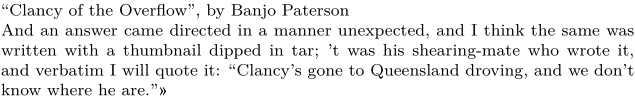

Syntax (autogenerated)
| \setupdelimitedtext[...,...][...=...,...] | |
| [...,...] | name name:number |
| before | command |
| after | command |
| language | local global language |
| method | font |
| repeat | yes no |
| location | text paragraph margin |
| left | command |
| middle | command |
| right | command |
| nextleft | command |
| nextright | command |
| spacebefore | see \blank |
| spaceafter | see \blank |
| leftmargin | yes no standard dimension |
| rightmargin | yes no standard dimension |
| indenting | see \setupindenting |
| indentnext | yes no auto |
| style | style command |
| color | color |
| symstyle | style command |
| symcolor | color |
Syntax
| \setupdelimitedtext[name][n][...,...=...,...] | |
| [name] | name of the delimitedtext to set up |
| [n] | (optional) nesting level to set up (1 = outermost) |
| location | margin text paragraph: function unknown |
| spacebefore | dimension: space above delimitedtext fragment |
| spaceafter | dimension, spacebefore by default: space below delimitedtext fragment |
| style | normal bold italic, etc |
| color | color |
| leftmargin | dimension: distance to edge of the page's left margin area |
| rightmargin | dimension, leftmargin by default |
| indentnext | yes no |
| before | command |
| after | command |
| left | text |
| middle | text |
| right | text |
| level=0, | unknown, 0 by default |
| repeat | no yes |
| method | unknown |
| TODO: The above describes MkII syntax. MkIV/LMTX syntax is different. See the parenthesis example below (See: To-Do List) |
Description
Set up the appearance of a delimitedtext environment defined earlier with \definedelimitedtext. \quotation and \quote are delimitedtexts, too, so you can also set up those with this command; but for those you can also use the special commands \setupquotation and \setupquote.
Most of the parameters are self-explanatory, but two things should be borne in mind:
-
Nearly all of the parameters apply only if the new kind of text is invoked with
\startmydelimitedtext: if one uses\mydelimitedtext{...}, onlyleftandrighthave any effect.
-
MkII only
:
leftmargincontains the distance to the actual left margin, not to the edge of the body text. If the new delimitedtext inherits fromquotation, the text will be indented a bit with respect to the body text; if you want to line them up, set theleftmarginto\leftmargindistancerather than to0pt.
Examples
Alternative quotation marks
-
\definedelimitedtext[mydt] \setupdelimitedtext[mydt][left=\leftguillemot,right=\rightguillemot] \quotation{Clancy of the Overflow}, by Banjo Paterson \startmydt And an answer came directed in a manner unexpected, and I think the same was written with a thumbnail dipped in tar; ’t was his shearing-mate who wrote it, and verbatim I will quote it: \quotation{Clancy's gone to Queensland droving, and we don't know where he are.} \stopmydt
- 
Even more alternative quotation marks
-
\setupdelimitedtext [quotation] [ left={\offset[y=.5\strutdp]{\mirror{\externalfigure[cow][height=\dimexpr\strutht+.5\strutdp\relax]}}\nbsp}, right={\nbsp\offset[y=.5\strutdp]{\externalfigure[cow][height=\dimexpr\strutht+.5\strutdp\relax]}}] \quotation{I’m a poor, lonesome cowboy...}
-

Smart parenthesis
-
\definedelimitedtext[parenthesis][location=text] \setupdelimitedtext [parenthesis:1] [left={(}, right={)}] \setupdelimitedtext [parenthesis:2] [left={[}, right={]}] \setupdelimitedtext [parenthesis:3] [left={\{}, right={\}}] \starttext \parenthesis{My outer layer \parenthesis{my inner layer \parenthesis{my innermost layer}}} \stoptext
Multiparagraph quotations
In English typography there is a custom of opening each paragraph in a multiparagraph quotation with a “repeated” opening quotation sign. This behavior may be turned on using the repeat switch and middle key, for example:
\setupquotation[repeat=yes, middle=“] % or equivalently \setupdelimitedtext[quotation][repeat=yes, middle=“]
See also
Help from ConTeXt-Mailinglist/Forum
All issues with: